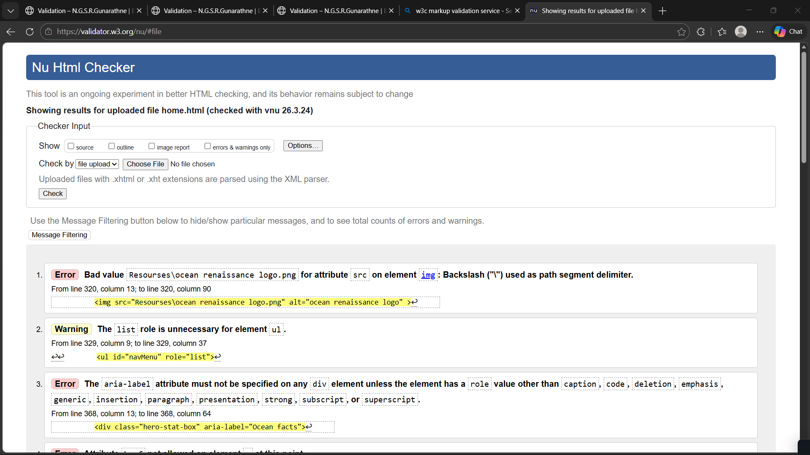
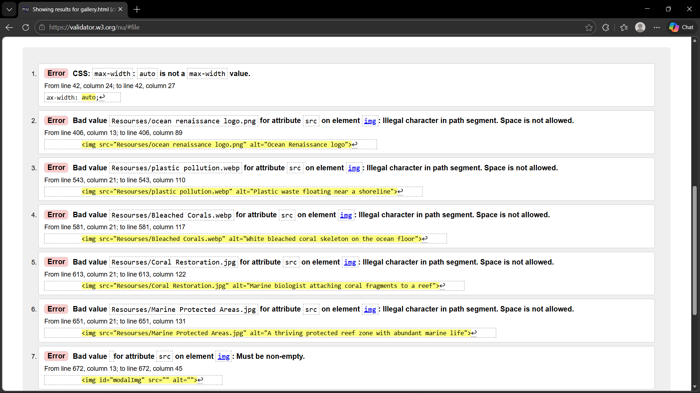
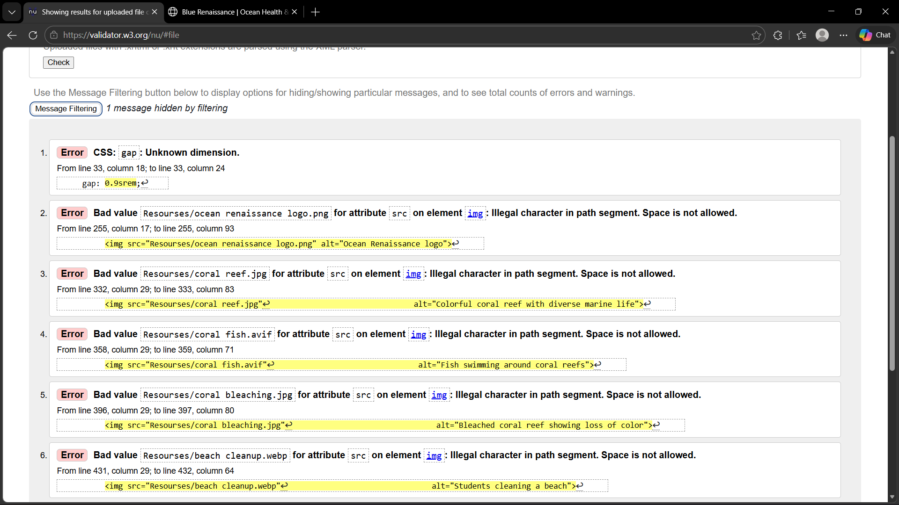

Home Page – Validation Report
I validated the webpage using the W3C Markup Validation Service. Several errors and warnings were identified, mainly related to HTML structure and unnecessary ARIA usage. I corrected issues such as invalid file paths, redundant roles, and incorrect use of aria-label to improve compliance with web standards. Some warnings, such as the heading level hierarchy, were reviewed but intentionally left unchanged to maintain the visual design of the page. The errors related to anchor elements were also reviewed but not modified, as the current structure is required for the intended layout and functionality.

Back to Page Editor
Gallery - Validation Report
I validated the webpage using the W3C Markup Validation Service. Several errors and warnings were identified, mainly related to CSS values, image file paths, and heading hierarchy. I corrected issues such as max-width: auto by changing it to 100% to comply with CSS standards. The errors related to image file paths containing spaces (e.g., Resourses/ocean renaissance logo.png) were reviewed but intentionally left unchanged, as the paths work correctly in the project. The empty src and alt attributes for the modal image were also left as-is to allow dynamic updates via JavaScript. The heading level hierarchy warning was reviewed but intentionally left unchanged to maintain the visual design of the page.

Back to Page Editor
Content Page - Validation Report
I validated the webpage using the W3C Markup Validation Service. One CSS error was identified due to a typo (gap: 0.9srem;), which I corrected to gap: 0.9rem. The remaining errors are related to spaces in image file paths (e.g., Resourses/ocean renaissance logo.png), which were flagged by W3C but intentionally left unchanged, as the paths work correctly in the project and do not affect functionality.
